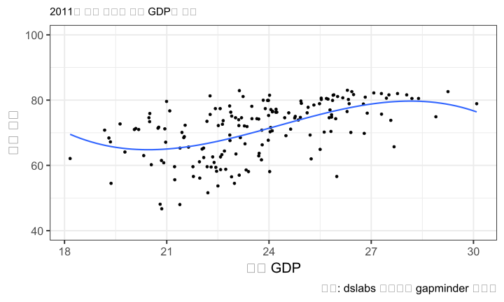

FMB819: R을 이용한 데이터분석
Linear Regression Extensions
Today’s Agenda
데이터의 특성과 변수 간 관계에 따라, 기본 모델에서 벗어나야 하는 경우가 있음.
3가지 중요한 변형을 살펴볼 것임:
- 비선형 관계 (Non-linear relationships): 로그 및 다항식 모델
- 변수 간 교차 (Interaction terms)
- 표준화 회귀 (Standardized regression)
이 경우에도 OLS(최소자승법) 추정 방법 사용
실증 분석 예제: (i) 대학 등록금과 소득 잠재력, (ii) 임금, 교육 수준 및 성별, (iii) 학급 규모와 학생 성취도
Non-Linear Relationships
Accounting for Non-Linear Relationships
2 가지 모형:
Log models
Polynomial models
Log 모델
지금까지 본 모델들은 수준-수준(Level-Level) 모델로 볼 수 있음. 종속 변수와 독립 변수가 원래 단위(수준)로 측정됨.
- 화폐단위(원), 연도, 학생 수, 퍼센트(%) 등
종속 변수 및/또는 독립 변수에 자연로그(Natural Logarithm) 를 취하면 3가지 유형의 회귀 모델을 정의할 수 있음
(표기 남용: \(\ln(x) = \log_{e}(x) = \log(x)\))로그 - 수준(Log - Level): \(\quad \log(y_i) = b_0 + b_1 x_{1,i} + ... + e_i\)
수준 - 로그(Level - Log): \(\quad y_i = b_0 + b_1 \log(x_{1,i}) + ... + e_i\)
로그 - 로그(Log - Log): \(\quad \log(y_i) = b_0 + b_1 \log(x_{1,i}) + ... + e_i\)
(자연)로그 함수: 기본 개념
(자연)로그 함수: 기본 개념
- 자연로그 함수는 지수 함수의 역함수로 정의됨, 즉 \(\log(\exp(x))=x\)
\(\rightarrow\) 모든 \(x\)에 대해 \(\exp(x)>0\) 이므로, 자연로그 함수는 0보다 큰 값에서만 정의됨! (즉, 0에서는 정의되지 않음)
- 변수에 로그를 취하려면 값이 0 또는 음수가 아닌지 확인해야 함! 종속 변수 또는 독립 변수에 로그를 적용할 때 항상 유의해야 함.
(자연)로그 함수: 기본 개념
- 데이터 분포가 한쪽으로 치우친 경우(Skewed Distributions), 로그를 취하면 더 정규 분포(Normal Distribution)에 가까워짐.
로그 모델: 간단한 해석
| 모델 | 회귀 모델 | \(b_1\) 해석 |
|---|---|---|
| 수준 - 수준 | \(y = b_0 + b_1 x + e\) | \(x\)가 1 단위 증가하면, 평균적으로 \(y\)는 \(b_1\) 단위 변화 |
| 로그 - 수준 | \(\log(y) = b_0 + b_1 x + e\) | \(x\)가 1 단위 증가하면, 평균적으로 \(y\)는 \(b_1 \times 100\)% 변화 |
| 수준 - 로그 | \(y = b_0 + b_1 \log(x) + e\) | \(x\)가 1% 증가하면, 평균적으로 \(y\)는 \(b_1 / 100\) 단위 변화 |
| 로그 - 로그 | \(\log(y) = b_0 + b_1 \log(x) + e\) | \(x\)가 1% 증가하면, 평균적으로 \(y\)는 \(b_1\)% 변화 |
이는 해석은 수학적으로 쉽게 도출 가능합니다.
⚠️ 위 해석은 \(x\)의 작은 변화와 \(b_1\)이 작은 경우에만 유효: \(x\)의 변화가 클 경우 또는 \(b_1\) 값이 크다면, 해석이 달라질 수 있음.
로그 모델: 일반적인 해석
\(x\)의 임의의 증가 \(\Delta x\) 와 임의의 \(b_1\)에 대해
\((\Delta x = 5\% = 0.05 \implies 1 + \Delta x = 1.05)\)
| 모델 | 회귀 모델 | \(b_1\) 해석 |
|---|---|---|
| 수준 - 수준 | \(y = b_0 + b_1 x + e\) | \(x\)가 1 단위 증가하면, 평균적으로 \(y\)는 \(b_1\) 단위 변화 |
| 로그 - 수준 | \(\log(y) = b_0 + b_1 x + e\) | \(x\)가 1 단위 증가하면, 평균적으로 \(y\)는 \((e^{b_1} - 1) \times 100\)% 변화 |
| 수준 - 로그 | \(y = b_0 + b_1 \log(x) + e\) | \(\Delta x\)% 증가하면, 평균적으로 \(y\)는 \(b_1 \times \log(1 + \Delta x)\) 단위 변화 |
| 로그 - 로그 | \(\log(y) = b_0 + b_1 \log(x) + e\) | \(\Delta x\)% 증가하면, 평균적으로 \(y\)는 \(((1 + \Delta x)^{b_1} - 1) \times 100\)% 변화 |
- 위 해석이 왜 유효한지 알고 싶다면? 부록: 로그 근사 (Appendix: Log Approximation) 참고
로그 모델을 언제 사용해야 할까?
- \(x\)와 \(y\)의 관계가 로그 또는 지수 함수처럼 보이는 경우
로그 모델을 언제 사용해야 할까?
- \(x\)와 \(y\)의 관계가 로그 또는 지수 함수처럼 보이는 경우
로그 모델을 언제 사용해야 할까?
\(x\)와 \(y\)의 관계가 로그 함수 또는 지수 함수처럼 보이는 경우
탄력성(elasticity)을 쉽게 해석하기 위해
\(x\)에 대한 \(y\)의 탄력성:
\(x\)가 1% 증가할 때, \(y\)가 몇 % 변화하는지를 나타냄
다른 형태의 비선형 관계를 고려
\(x\)와 \(y\)의 관계가 지수 함수(exponential) 또는 로그 함수(logarithm)가 아니라면?
\(\rightarrow\) 다항 회귀(polynomial regression): 회귀 변수에 다항식을 적용!
다항식(polynomial)? 🤔
다항식 회귀 (Polynomial Regressions)
시각적 또는 예상되는 관계에 따라 회귀식에 높은 차수의 독립 변수를 추가
R에서 다항식 회귀 사용법
다항식 회귀 (Polynomial Regressions)
2차 다항식 회귀
3차 다항식 회귀


Task 1
10:00 데이터를 여기에서 다운로드하여 불러오시오. 이 데이터셋은 미국 대학의 등록금과 졸업생의 예상 소득 정보를 포함하고 있다. 데이터에 대한 자세한 설명은 여기에서 확인할 수 있음.
예상 중간 경력 소득(
mid_career_pay)을 종속 변수(𝑦축)로 하고, 주 외 등록금(out_of_state_tuition)을 독립 변수(𝑥축)로 하는 산점도를 생성하시오. 관계가 대체로 선형적이라고 볼 수 있는가, 아니면 비선형적인가? 선형 회귀선과 2차 다항 회귀선을 함께 적합하기 위해geom_smooth(method = "lm", se = F) + geom_smooth(method = "lm", se = F, formula = y ~ poly(x, 2, raw= T))을 사용하시오. 이번 경우 어느 모델이 더 적절한가?주 외 등록금을 1000으로 나눈 새로운 변수를 생성하시오. 이를 이용하여 예상 중간 경력 소득을 회귀 분석하시오. 회귀 계수를 해석하시오.
예상 중간 경력 소득을 주 외 등록금을 1000으로 나눈 변수와 그 제곱 항을 포함하여 회귀 분석하시오. 힌트:
poly(x, 2, raw = T)또는x + I(x^2)를 사용할 수 있음. 제곱 항의 계수가 양수라는 것은 무엇을 의미하는가?
Interaction Terms
교차 변수 (Interacting Regressors)
한 변수의 효과가 다른 변수의 값에 따라 달라질 것이라고 가정하는 경우.
- 예제: 교육 수준이 임금에 미치는 영향이 성별에 따라 달라질 수 있음.
만약 \(x_1\)과 \(x_2\)를 상호작용 변수로 추가한다면, 회귀 모형을 다음과 같이 만듬:
\[y_i = b_0 + b_1 x_{1,i} + b_2 x_{2,i} + b_3x_{1,i} \times x_{2,i} + ... + e_i\]
\(b_1\), \(b_2\), 그리고 \(b_3\)의 해석은 \(x_1\)과 \(x_2\)의 유형(연속형 또는 범주형)에 따라 달라짐.
우선, 하나의 독립 변수가 더미(범주형) 변수이고, 다른 하나가 연속형 변수인 경우를 살펴보겠음.
이러한 개념을 익히면 다음과 같은 경우에도 적용 가능:
두 개의 독립 변수가 모두 더미(범주형) 변수인 경우,
두 개의 독립 변수가 모두 연속형 변수인 경우.
교차 변수 (Interacting Regressors)
STAR 실험 데이터: 작은 학급과 일반 학급의 효과는 교사의 경험에 따라 어떻게 달라지는가?
회귀 모형은 다음과 같이 변함:
\[ \textrm{score}_i = \color{#d96502}{b_0} + \color{#027D83}{b_1} \textrm{small}_i + \color{#02AB0D}{b_2} \textrm{experience}_i + \color{#d90502}{b_3} \textrm{small}_i \times \textrm{experience}_i + e_i\]
- 교사 경력이 10년인 경우 작은 학급의 효과는?
\[ \mathbb{E}[\textrm{score}_i | \textrm{small}_i = 1 \textrm{ & experience}_i = 10] = \color{#d96502}{b_0} + \color{#027D83}{b_1} + \color{#02AB0D}{b_2}*10 + \color{#d90502}{b_3}*10 \]
\[ \mathbb{E}[\textrm{score}_i | \textrm{small}_i = 0 \textrm{ & experience}_i = 10] = \color{#d96502}{b_0} + \color{#02AB0D}{b_2}*10 \]
\[ \begin{split} \mathbb{E}[\textrm{score}_i &| \textrm{small}_i = 1 \textrm{ & experience}_i = 10] - \mathbb{E}[\textrm{score}_i | \textrm{small}_i = 0 \textrm{ & experience}_i = 10] \\ &= \color{#d96502}{b_0} + \color{#027D83}{b_1} + \color{#02AB0D}{b_2}*10 + \color{#d90502}{b_3}*10 - (\color{#d96502}{b_0} + \color{#02AB0D}{b_2}*10) \\ &= \color{#027D83}{b_1} + \color{#d90502}{b_3}*10 \end{split} \]
교차 변수 (Interacting Regressors)
math 점수에 대한 회귀 분석을 실행한 결과 (모든 학년 포함):
Call:
lm(formula = math ~ small + experience + small * experience,
data = star_df)
Coefficients:
(Intercept) smallTRUE experience
534.1919 15.8906 1.3305
smallTRUE:experience
-0.3034 해석
교차항은 작은 학급의 효과가 교사의 경험에 따라 달라지도록 함.
작은 학급에 배정되는 것이 math 점수에 긍정적인 영향을 줌.
그러나 이 효과는 교사의 경험이 많아질수록 감소함.
교차 변수: 시각화
\[ \textrm{score}_i = \color{#d96502}{b_0} + \color{#027D83}{b_1} \textrm{small}_i + \color{#02AB0D}{b_2} \textrm{experience}_i + \color{#d90502}{b_3} \textrm{small}_i * \textrm{experience}_i + e_i\]
교차 변수: 시각화
\[ \textrm{score}_i = \color{#d96502}{b_0} + \color{#027D83}{b_1} \textrm{small}_i + \color{#02AB0D}{b_2} \textrm{experience}_i + \color{#d90502}{b_3} \textrm{small}_i * \textrm{experience}_i + e_i\]
교차 변수: 시각화
\[ \textrm{score}_i = \color{#d96502}{b_0} + \color{#027D83}{b_1} \textrm{small}_i + \color{#02AB0D}{b_2} \textrm{experience}_i + \color{#d90502}{b_3} \textrm{small}_i * \textrm{experience}_i + e_i\]
교차 변수: 시각화
\[ \textrm{score}_i = \color{#d96502}{b_0} + \color{#027D83}{b_1} \textrm{small}_i + \color{#02AB0D}{b_2} \textrm{experience}_i + \color{#d90502}{b_3} \textrm{small}_i * \textrm{experience}_i + e_i\]
교차 변수: 시각화
\[ \textrm{score}_i = \color{#d96502}{b_0} + \color{#027D83}{b_1} \textrm{small}_i + \color{#02AB0D}{b_2} \textrm{experience}_i + \color{#d90502}{b_3} \textrm{small}_i * \textrm{experience}_i + e_i\]
교차 변수: 시각화
\[ \textrm{score}_i = \color{#d96502}{b_0} + \color{#027D83}{b_1} \textrm{small}_i + \color{#02AB0D}{b_2} \textrm{experience}_i + \color{#d90502}{b_3} \textrm{small}_i * \textrm{experience}_i + e_i\]
Task 2
10:00 CPS1985 데이터 분석
AER패키지에서CPS1985데이터를 불러오시오.변수의 정의를 확인하기 위해 도움말을 참조하시오:
?CPS1985해당 데이터에서 사람들이 파트타임 또는 풀타임으로 근무하는지 여부가 중요한가? 그 이유는 무엇인가?
wage변수의 자연 로그 값을 저장하는log_wage변수를 생성하시오.log_wage를gender와education에 대해 회귀 분석을 수행하고 이를reg1으로 저장하시오. 각 계수를 해석하시오.log_wage를gender,education및gender*education(상호작용 변수)로 회귀 분석을 수행하고 이를reg2로 저장하시오. 각 계수를 해석하시오. 성별 임금 격차가 교육 수준이 증가할수록 줄어드는가?해당 상호작용 효과를 시각적으로 나타내는 그래프를 생성하시오. (힌트:
aes에서color = gender를 사용하고,geom_smooth(method = "lm", se = F)를 활용하여 성별별 회귀선을 그리시오.)
Standardized Regression
표준화 회귀 분석 (Standardized Regression)
- 변수를 표준화(standardizing) 한다는 것이 무엇을 의미하는지 정의해 보자.
표준화란 변수 \(z\)의 평균을 빼고, 그 값을 변수의 표준편차로 나누는 것을 의미함:
\[ z_i^{stand} = \frac{z_i - \bar z}{\sigma(z)}\]
여기서, \(\bar z\)는 \(z\)의 평균이고, \(\sigma(z)\)는 \(z\)의 표준편차를 의미함. 즉, \(\sigma(z) = \sqrt{\textrm{Var}(z)}\).
이제 \(z^{stand}\)는 평균이 0이고, 표준편차가 1이 됨, 즉:
\[\overline{z^{stand}} = 0, \quad \sigma(z^{stand}) = 1\]
직관적으로 표준화는 변수들을 동일한 척도로 변환하여 비교할 수 있도록 해줌.
우리의 학급 규모(class size)와 학생 성과(student performance) 예제에서 표준화를 사용하면:
- 효과의 크기(magnitude) 해석이 쉬워지고,
- 각 변수의 상대적 중요성을 비교할 수 있음.
- 효과의 크기(magnitude) 해석이 쉬워지고,
표준화 회귀 분석: 시각화

표준화 회귀 분석: 시각화
종속 변수 \(y\)가 표준화된 경우: \(\color{#d90502}{y^{stand}} = b_0 + \sum_{k=1}^Kb_kx_k +e\)
\(b_k\)는 \(x_k\)가 한 단위 증가할 때 \(y^{stand}\)가 얼마나 변하는지를 나타냄.
\(y^{stand}\)가 1 증가하면 이는 \(y\)가 한 표준편차만큼 증가한다는 의미. 따라서 \(b_k\)는 \(y\) 표준편차의 비율로서 \(y\)의 변화를 측정함.
설명 변수 \(x_k\)가 표준화된 경우: \(y = b_0 + \sum_{k=1}^Kb_k\color{#d90502}{x_k^{stand}} +e\)
\(b_k\)는 \(x_k^{stand}\)가 한 단위 증가할 때 \(y\)가 얼마나 변하는지를 나타냄.
\(x_k^{stand}\)가 1 증가하면 이는 \(x_k\)가 한 표준편차만큼 증가한다는 의미. 따라서 \(b_k\)는 \(x_k\)가 한 표준편차 증가할 때 예측되는 \(y\)의 변화를 측정함.
Task 3
10:00 학년별 성적 데이터: 데이터를 불러오기 위해서는 haven 패키지의 read_dta() 함수를 사용. 아래는 평균 수학 시험 점수를 전체 독립 변수 세트에 대해 회귀 분석한 결과:
(Intercept) classize disadvantaged school_enrollment
78.560725298 0.003320773 -0.389333008 0.000758258
female religious
0.923710499 2.876146701 표준화된 수학 점수 변수 생성:
avgmath_stand라는 새로운 변수를 만들어 표준화된 수학 점수를 저장하시오. scale() 함수를 (mutate와 함께) 사용하거나, 기본 R을 사용하여 직접 계산할 수 있음.표준화된 수학 점수를 종속 변수로 회귀 분석: 표준화된 수학 점수를 종속 변수로 사용하여 전체 회귀 분석을 수행하시오. 각 계수의 크기와 의미를 해석하시오.
연속형 독립 변수 표준화: 각 연속형 독립 변수에 대해
변수명_stand형태의 표준화된 변수를 만드시오.religious변수를 표준화하는 것이 적절한가?표준화된 독립 변수로 회귀 분석:
avgmath_stand를 종속 변수로 하고, 표준화된 모든 독립 변수 및religious를 포함하여 회귀 분석을 수행하시오. 각 독립 변수가 상대적으로 얼마나 중요한지 논의하시오.
다음 수업 예고
지금까지 우리는 항상 전체 모집단에서 표본을 추출하여 작업해 왔음.
매번 새로운 표본을 모집단에서 다시 추출한다고 가정하면:
같은 결과를 얻을 수 있을까?
다시 말해, 우리의 추정치(부호, 크기)가 단순히 무작위성에 의해 결정되지 않았다는 것을 얼마나 확신할 수 있을까?
이러한 질문들에 대한 답을 찾기 위해:
표본 추출(sampling) 개념을 소개하고,
통계적 추론(statistical inference)이 무엇이며, 어떻게 수행하는지 알아볼 것임.
🔍 인과 관계를 찾아가는 길
✅ 데이터를 어떻게 다룰까?: 읽기(Read), 정리(Tidy), 시각화(Visualize)…
✅ 변수간 관계를 어떻게 요약할까? …단순 / 다중 선형 회귀…비선형회귀, 교차변수…
✅ 인과 관계(Causality)란 무엇인가?
❌ 전체 모집단을 관측하지 못하면 어떻게 할까?
❌ 우리의 연구 결과가 단순한 무작위(Randomness) 때문일 수도 있을까?
❌ 실제로 외생성을 어떻게 찾아낼 수 있을까?
THE END!
Appendix
로그 모델: 근사값
이전에 제시된 근사값들이 왜 성립하는가?
로그-레벨 (Log-Level)
일반적인 해석: \(x\)가 1 단위 증가할 때, 평균적으로 \(y\)는 \((e^{b_1} - 1) \times 100\) 퍼센트 변화함.
단순 해석: \(x\)가 1 단위 증가할 때, 평균적으로 \(y\)는 \(b_1 \times 100\) 퍼센트 변화함.
- 이는 작은 값의 \(b_1\)에 대해 다음 식이 성립하기 때문: \(e^{b_1} \approx 1 + b_1 \iff b_1 \approx e^{b_1} - 1\)
\(\rightarrow\) \(b_1 = \color{#d90502}{0.04}\)일 때, \(e^{b_1} - 1 = e^{0.04} - 1 = 0.0408\)
\(\rightarrow\) \(b_1 = \color{#d90502}{0.5}\)일 때, \(e^{b_1} - 1 = e^{0.5} - 1 = 0.6487\)
로그 모델: 근사값
이전에 제시된 근사값들이 왜 성립하는가?
레벨-로그 (Level-Log)
일반적인 해석: \(x\)가 \(\Delta x\) 퍼센트 증가할 때, 평균적으로 \(y\)는 \(b_1 \times log(1 + \Delta x)\) 단위 변화함.
단순 해석: \(x\)가 1% 증가할 때, 평균적으로 \(y\)는 \(b_1 / 100\) 단위 변화함.
- 이는 작은 값의 \(\Delta x\)에 대해 다음 식이 성립하기 때문: \(log(1 + \Delta x) \approx \Delta x\)
\(\rightarrow\) \(\Delta x = \color{#d90502}{1\%}=0.01\)일 때, \(log(1+\Delta x) = log(1.01) = 0.01\) (따라서 단순 해석에서 \(/100\)이 추가됨)
\(\rightarrow\) \(\Delta x = \color{#d90502}{20\%}=0.20\)일 때, \(log(1+\Delta x) = log(1.20) = 0.18\)
로그 모델: 근사값
이전에 제시된 근사값들이 왜 성립하는가?
로그-로그 (Log-Log)
일반적인 해석: \(x\)가 \(\Delta x\) 퍼센트 증가할 때, 평균적으로 \(y\)는 \(((1 + \Delta x)^{b_1} - 1) \times 100\) 퍼센트 변화함.
단순 해석: \(x\)가 1% 증가할 때, 평균적으로 \(y\)는 \(b_1\) 퍼센트 변화함.
- 이는 작은 값의 \(|b_1| \times \Delta x\)에 대해 다음 식이 성립하기 때문: \((1 + \Delta x)^{b_1} \approx 1 + b_1 \times \Delta x \iff b_1 \times \Delta x \times 100 \approx ((1 + \Delta x)^{b_1} - 1) \times 100\)
\(\rightarrow\) \(\Delta x = \color{#d90502}{1\%}=0.01\)이고 \(b_1 = \color{#d90502}{0.5}\)일 때,
\(((1+\Delta x)^{b_1} - 1) \times 100 = (1.01^{0.5} - 1) \times 100 = 0.5\)
\(\rightarrow\) \(\Delta x = \color{#d90502}{10\%}=0.10\)이고 \(b_1 = \color{#d90502}{10}\)일 때,
\(((1+\Delta x)^{b_1} - 1) \times 100= (1.1^{10} - 1) \times 100 = 159.37\)